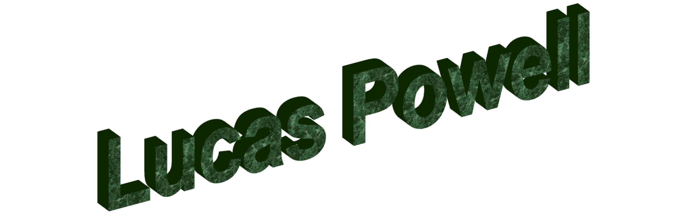

Tylok International
December 2024 to August 2025
TYLOK.... I worked at Tylok International as an engineering co-op intern from December 2024 to August 2025. I completed a multitude of tasks at Tylok, ranging from product design and validation to efficiency increases on the manufacturing floor. Tylok manufactures high pressure compression fittings and is the only manufacturer of NFPA 99 Compliant fittings. Working here was an amazing experience, and the freedom to work on the projects I felt the most interested in led me to explore and improve as an engineer. The following projects are the most impactful projects I worked on. I have limited information and photos on these projects because of my employment NDA.
High Pressure Testing.... The high pressure testing system was the most impactful project I contributed to during my time at Tylok International. The objective was to bring ASTM, ANSI, and ECE specification testing in-house, reducing outsourcing costs while gaining direct control over design validation. The system had to satisfy a wide range of test requirements — from cryogenic temperatures as low as -80°F up to 300°F, open flame exposure, and mechanical vibration, to the most demanding requirement of all: high pressure gas cycling. The central engineering challenge was designing a system capable of cycling nitrogen gas at pressures exceeding 9,000 psi continuously for hours at a time without interruption. Working alongside one other engineer, I developed a solution using a two-stage gas boosting architecture. Multiple high pressure supply tanks feed a pneumatically controlled boosting circuit that maintains a dedicated reservoir above 15,000 psi, ensuring there is always sufficient stored energy to rapidly charge a test specimen and sustain pressure through the full cycle without pressure drop compromising the test validity. The broader system was designed around a centralized control unit, allowing multiple independent tests to run simultaneously and making efficient use of the facility. Because many of the other specification tests operate at lower pressures or can use hydrostatic methods, this single high pressure nitrogen system serves as the backbone for a large portion of the overall test matrix. Additional equipment was sourced and integrated as part of the same initiative, including a vibration table, an environmental chamber for thermal cycling, two compression fitting fatigue machines, and a custom-designed leak detection system — together forming a comprehensive in-house testing capability that had previously required outside laboratories.

Prototype Hydrostatic Cycle Testing.
FEA and Consulting.... I led an effort to set up a workflow to run finite element analysis on the compression fitting ferrule plastic deformation during initial tightening. This was to reduce the design turn around time, as each iteration to the design needed to be manufactured, surface and heat treated before the engineering team could test it. The FAE workflow was intended to reduce the number of designs tested by giving a preliminary result to allow some designs to be eliminated from consideration before prototypes were made. I did get a model to correctly evaluate the plastic deformation, but this approach had its limits, especially with the investment to teach an engineer the software, so I contacted some Ansys certified consultants to work on a plan to outsource the analysis and work with them to validate the workflow.
Quick Connect Assembly Tooling.... I had designed an machines a series of tools for the assembly of size 6 and 8 quick connection fittings. This included a workstation to organize and house the parts and tools. The tools were all custom for the process, consisting of snap ring tools, O-ring tools, part fixtures and crimping dies.
Crane and Mill DRO Repair.... Myself, along a coworker, repaired a previous interns crane, as well as modified the initial design to prevent binding and reduce the bending of the sliding tracks. This project gave the crane a new life as previously it was not being used, proposing a genuine risk to the employees manually lifting heavy bins. The crane now works with some improvements to the design.

Prototype Hydrostatic Cycle Testing.
Tool Drawings & Tool Trays.... Updated tooling drawings to reflect customizations the tooling engineering had made. Also designed a modular tool tray system to work with the companies tooling vending machines.
Tylok May the 4th Starwars Video....played darth vader as my breakout acting role. video link
Last Updated:
End of Page
